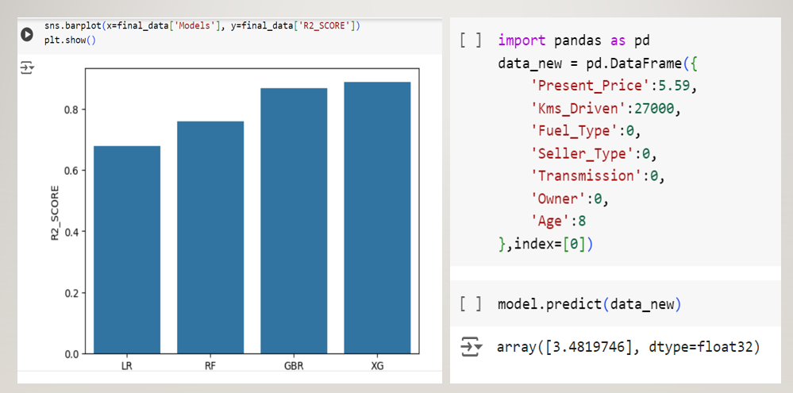

Recipe Book
A recipe book using HTML, CSS, and JavaScript is a web application that allows users to browse, search, and filter various recipes. HTML structures the content, CSS styles the layout for a visually appealing design, and JavaScript adds interactivity, such as search functionality and dynamic recipe displays. This project helps practice web development skills while building a practical, user-friendly application.

Car Price Prediction System 2
Car price prediction using Machine Learning (ML) involves building a model to estimate the price of a car based on various features or attributes such as make, model, year of manufacture, mileage, engine size, brand, fuel type, and other relevant factors. By training a machine learning algorithm on historical data of car sales, the model learns patterns and relationships in the data that allow it to predict the price of a car given the features.